Examen Práctico:
Mantenimiento de Software
EPN Event Manager · CRUD persistente de platos típicos ecuatorianos
Objetivo del examen
Tomar un CRUD inicial, diagnosticar deuda técnica y aplicar mantenimiento formal con evidencia reproducible.
- Diagnóstico de deuda técnica.
- TDD: ciclo RED → GREEN → REFACTOR.
- Mantenimiento correctivo, adaptativo, perfectivo y preventivo.
- Pruebas unitarias, e2e y manuales.
- Logs, trazabilidad, Swagger, API Key y CI/CD.
Entregables que cubre la presentación
| Criterio | Evidencia |
|---|---|
| Diagnóstico | Deuda técnica y riesgos |
| Intervención técnica | Código + pruebas + logs |
| Clasificación | Tipos de mantenimiento |
| Prueba de vida | Demo funcional + checks |
Contexto del proyecto
Recurso principal: PlatoTipico
| id | Identificador único |
| nombre | Nombre del plato |
| descripcion | Descripción gastronómica |
| region | Costa, Sierra, Amazonía, etc. |
| ingredientes | Ingredientes principales |
| precio | Precio referencial |
| imagenUrl | Imagen del plato |
| categoria | Categoría culinaria |
Arquitectura base
- Proyecto ubicado en
Examen/epn-event-manager. - CRUD en
src/modules/platos-tipicos. - Base persistente:
db/platos-tipicos.sqlite. - Frontend en carpeta
frontend/.
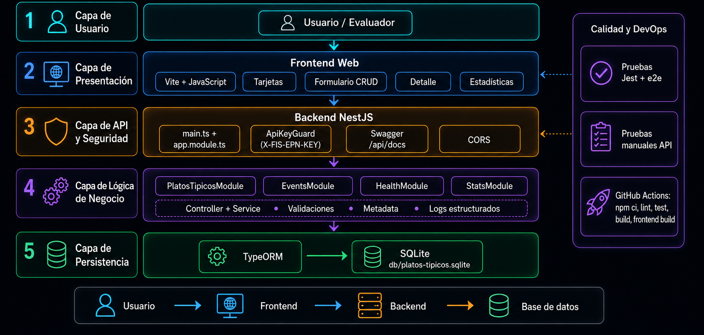
Línea base: CRUD persistente
Antes del mantenimiento se construyó un CRUD funcional para crear, consultar, actualizar y eliminar platos típicos, usando SQLite como almacenamiento principal.
| Método | Endpoint | Propósito | Evidencia esperada |
|---|---|---|---|
| POST | /platos-tipicos | Crear plato | HTTP 201 + id generado |
| GET | /platos-tipicos | Listar platos | HTTP 200 + arreglo |
| GET | /platos-tipicos/:id | Consultar por id | HTTP 200 o 404 |
| PATCH | /platos-tipicos/:id | Actualizar campos | HTTP 200 + cambios |
| DELETE | /platos-tipicos/:id | Eliminar registro | HTTP 200 + deleted true |
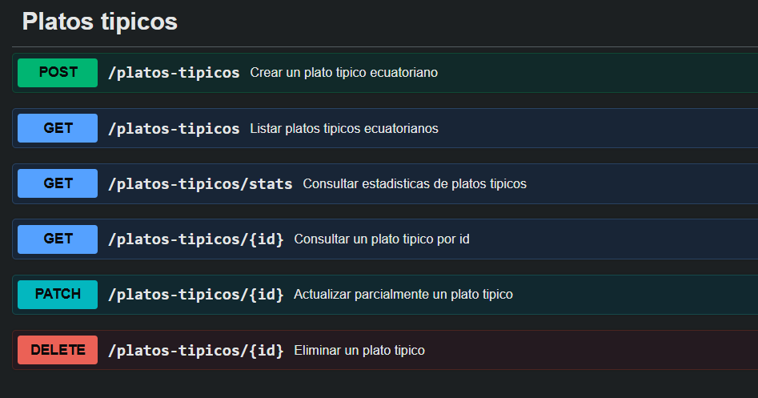
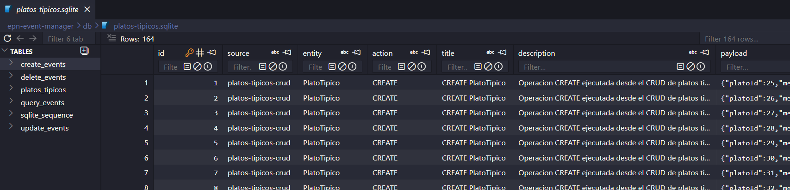
Diagnóstico de deuda técnica
Pruebas limitadas
Riesgo de regresiones en crear, listar, consultar, actualizar, eliminar y persistencia.
Validaciones incompletas
Campos vacíos, URLs inválidas, precio negativo y textos peligrosos podían persistirse.
Seguridad ausente
Los endpoints estaban abiertos sin cabecera de autorización.
Sin trazabilidad
No existían logs estructurados para diagnosticar acciones o errores.
Sin integración
Las respuestas no incluían metadata útil para EPN Event Manager.
Sin CI / Swagger
La validación y documentación dependían de ejecución manual dispersa.
Mapa de mantenimiento aplicado
| Tipo | Problema inicial | Cambio realizado | Impacto |
|---|---|---|---|
| Correctivo | Riesgo de éxito falso al eliminar. | Pruebas e2e de DELETE real, 404 e inexistencia tras reinicio. | Errores controlados y eliminación confiable. |
| Adaptativo | API sin contexto para integrarse. | Wrapper { data, metadata } e integración con eventos. | Contrato uniforme para EPN Event Manager. |
| Perfectivo | Sin análisis ni interfaz visual. | Endpoint /stats y frontend Vite. | Más valor funcional y mejor demo. |
| Preventivo | Riesgo de fallos futuros. | Validaciones, API Key, logs, Swagger, GitHub Actions. | Mayor seguridad, observabilidad y automatización. |
Dashboard de estado del proyecto
Cobertura por mantenimiento
Estado de checks
Build backend, lint, pruebas unitarias, pruebas e2e y build frontend completados.
Espacio para dashboard real
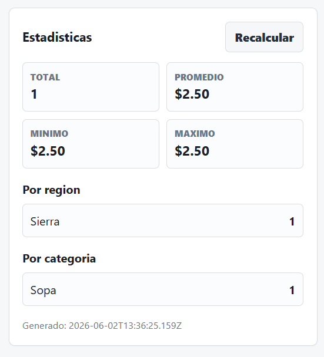
Metodología TDD aplicada
Se crea una prueba que evidencia la deuda o la funcionalidad faltante.
Se implementa el cambio mínimo para que la prueba pase.
Se mejora estructura o legibilidad sin cambiar comportamiento.
Comandos usados
npm test
npm run test:e2e
npm run build
npm run lint
cd frontend
npm run buildQué validan las pruebas
- CRUD base y persistencia SQLite.
- Errores 404, 400 y 401.
- Metadata adaptativa en respuestas.
- Estadísticas calculadas desde datos reales.
- Validaciones, sanitización, API Key y logs.
Pruebas automáticas explicadas
| Grupo | Escenario | Resultado esperado |
|---|---|---|
| CRUD | Crear, listar, consultar, actualizar y eliminar. | HTTP correcto y datos persistidos. |
| Persistencia | Crear plato, reiniciar NestJS y consultar. | El plato sigue en SQLite. |
| Correctivo | DELETE con id inexistente. | 404, sin falso deleted: true. |
| Adaptativo | CREATE/READ/UPDATE/DELETE. | Respuesta con data y metadata. |
| Preventivo | Campos vacíos, precio negativo, URL inválida, script y SQL. | HTTP 400 y datos no guardados. |
| Seguridad | API Key ausente, incorrecta y correcta. | 401 o 200 según corresponda. |
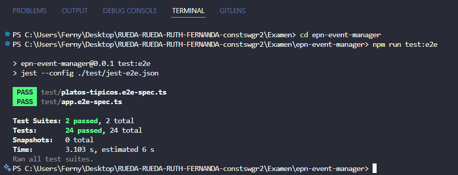
Pruebas manuales de API
Flujo manual principal
- Iniciar backend con
FIS_EPN_API_KEY. - Crear plato típico con
POST. - Guardar el
iddevuelto. - Listar, consultar y actualizar.
- Consultar estadísticas.
- Eliminar y confirmar 404.
- Reiniciar backend y validar persistencia.
Comando ejemplo
curl http://localhost:3000/platos-tipicos \
-H "X-FIS-EPN-KEY: clave-de-prueba"La guía manual también cubre API Key incorrecta, datos inválidos, script malicioso y precio negativo.
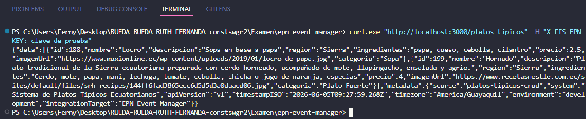
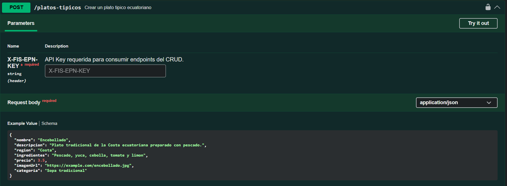
Integración adaptativa con EPN Event Manager
El CRUD se adaptó para no devolver entidades aisladas, sino respuestas con datos y contexto operativo.
Contrato de respuesta
{
"data": { "id": 1, "nombre": "Encebollado" },
"metadata": {
"source": "platos-tipicos-service",
"system": "EPN Event Manager",
"apiVersion": "1.0.0",
"timestampISO": "2026-...",
"timezone": "America/Guayaquil",
"environment": "development",
"integrationTarget": "epn-event-manager"
}
}Por qué es adaptativo
- Adapta el sistema a un nuevo contexto de integración.
- No cambia el modelo oficial de
PlatoTipico. - Agrega trazabilidad contextual por operación.
- Integra internamente con el módulo
events.
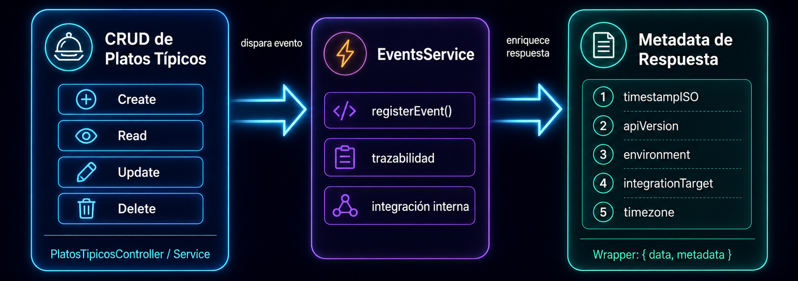
Mantenimiento preventivo: seguridad y validaciones
API Key
Todos los endpoints de platos típicos requieren la cabecera:
X-FIS-EPN-KEY: clave-de-prueba/health queda libre para verificación de estado.
Validaciones
- Campos obligatorios no vacíos.
trimantes de guardar.- Precio mayor o igual a 0.
- URL válida
httpohttps. - Bloqueo de
<script>,SELECT,DROP,INSERT,--.
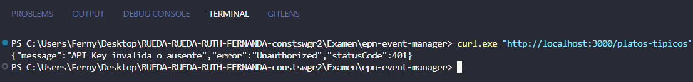
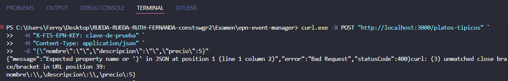
Logs estructurados y Swagger
Logs estructurados
{
"level": "INFO",
"timestampISO": "2026-...",
"route": "/platos-tipicos",
"action": "CREATE",
"platoId": 1,
"message": "Plato creado"
}Permiten diagnosticar operaciones exitosas, validaciones fallidas, API Key inválida y errores no controlados.
Swagger / OpenAPI
- Disponible en
/api/docs. - Documenta CRUD y
/stats. - Incluye DTOs y errores 400, 401, 404.
- Documenta cabecera
X-FIS-EPN-KEY.
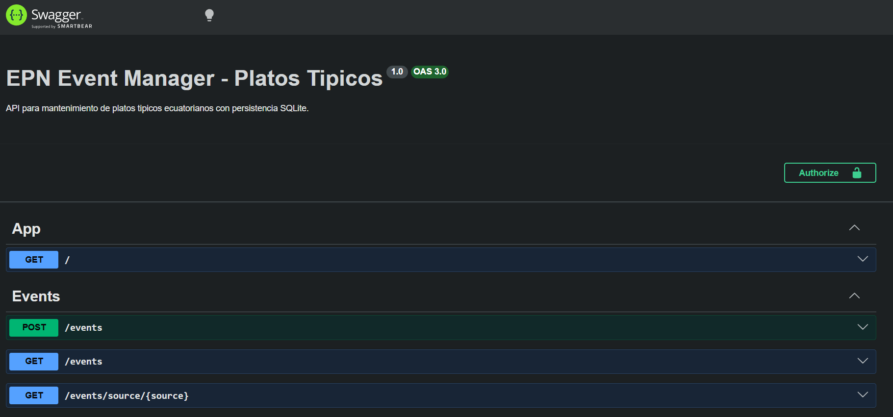
GitHub Actions: checks automáticos
El workflow valida el proyecto al hacer push o pull_request, reduciendo el riesgo de subir cambios rotos.
| Check | Qué evita | Estado esperado |
|---|---|---|
| Lint | Errores de estilo o malas prácticas | GREEN |
| Unit tests | Regresiones básicas | GREEN |
| Build backend | Errores TypeScript / NestJS | GREEN |
| Build frontend | Errores Vite / JS | GREEN |
Frontend Vite para demostración
Funciones visuales
- Listar platos en tarjetas.
- Mostrar imagen, nombre, región, ingredientes, precio y categoría.
- Crear, editar, ver detalle y eliminar.
- Mostrar estadísticas desde
/platos-tipicos/stats. - Enviar
X-FIS-EPN-KEYen cada petición. - Manejar errores cuando el backend no responde.
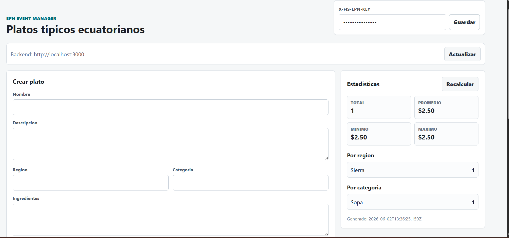
Guion de demostración en vivo
Iniciar backend con API Key: $env:FIS_EPN_API_KEY="clave-de-prueba"; npm run start:dev
Abrir Swagger en http://localhost:3000/api/docs y mostrar endpoints documentados.
Iniciar frontend con cd frontend && npm run dev.
Crear un plato típico y verificar que aparece en tarjetas.
Editar, consultar detalle, eliminar y confirmar errores controlados.
Mostrar estadísticas, logs en consola y ejecución de pruebas.
Checklist final de cumplimiento
¿Preguntas?
“La calidad de un sistema no se mide solo por su estado inicial, sino por la facilidad con la que puede adaptarse y mantenerse.”